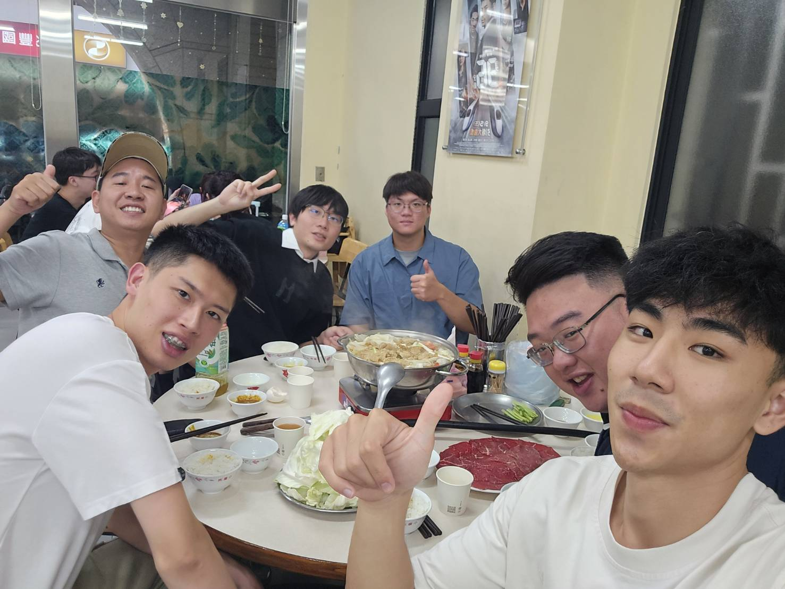

Guan Syun Su
/ 蘇冠勳
大氣暴露 · PFAS 採樣
作品
發表
聯絡
中文/EN
🌙
校園與生活紀錄
把碩士生活做成相簿：實驗日常、校園時刻、研討會出差與朋友們的合照。點擊照片可放大檢視（Lightbox）。
全部
實驗
校園
研討會
朋友/聚會
聚餐

研討會後聚餐
NCKU 2025
黃昏的操場
NYCU Campus · 2025-03
Dioxin 2025 演講準備
Antalya · 2025-09
同學生日聚會
Hsinchu · 2025-04
戶外採樣站位
Kaohsiung · 2025-05
海報展示日
Poster Session · 2025-06
圖書館自習時光
NYCU Library · 2025-02
跨年夜一起吃火鍋
2025-01
清理石英濾紙與藥瓶
Lab · 2025-07
校園夜景與月光
NYCU · 2025-08
出發土耳其的機場打卡
TPE → AYT · 2025-09
與學長姐的歡送會
Lab · 2025-10